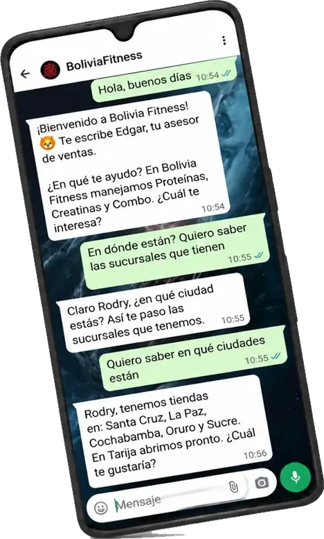

Bolivia Fitness
Muestra el catálogo, responde las dudas de siempre y registra el pedido con recojo o envío. Todo queda en base de datos y el equipo interviene desde un panel.
«Rodry, tenemos tiendas en Santa Cruz, La Paz, Cochabamba, Oruro y Sucre. En Tarija abrimos pronto. ¿Cuál te gustaría?»